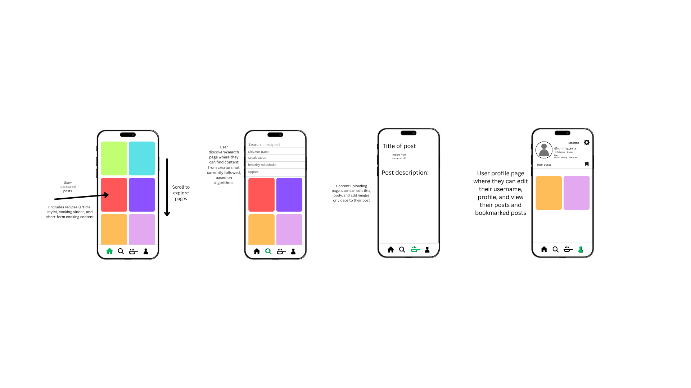

Problem Statement

Social media prioritizes posts with calorie-dense meat-based dishes, lowering vegetable consumption and causing unhealthier dietary choices.
Affinity Diagram

Relevant solution-oriented topics organized into 7 categories.
Sketches
Sketches of proposed social media app, one of which shows the general usage of the app by the end-user. Another shows a sitemap of the various menus within the app to access different interactions and settings. The final sketch displays the content moderation end of the program.